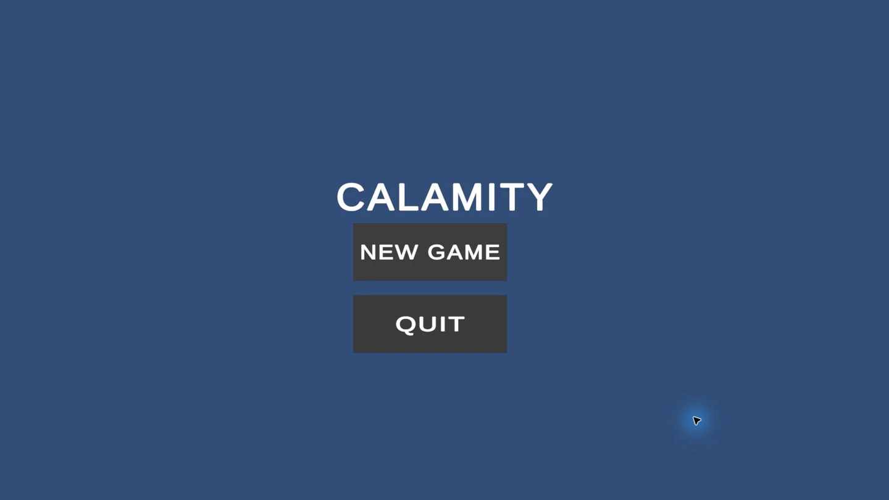
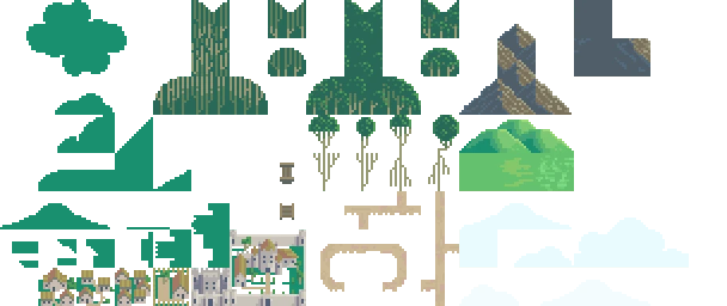
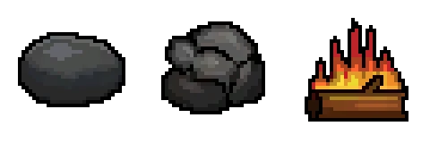

All projects
Unity prototype · CCT382
Calamity
A natural-disaster-themed tower defense prototype built around a winding river path.







The project
The river carries hazards such as rocks and a burning log toward the town. Collect debris and use it to build defenses, with different options for incoming objects, damage, and fire.
The winding river makes it easy to follow the hazards. Its bends create distinct places to position defenses.
What it uses
- Unity
- Tower defense design
- Pixel art and level layout
Project format
Collaborative coursework supplied as a Windows build.